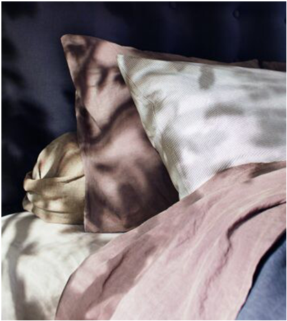

모든것은 스프링에서부터 시작되었습니다. 바이스프링은 포켓 스프링의 창시자입니다.1901년 설립된 이후 지속적으로 포켓스프링을 사 용해온 바이스프링은 모든 매트리스가 포켓 스프링으로 이루어져 있습니다.모든 포켓스프링 들이 하나로 움직여 사용자의 몸에 맞는지 지지 시스템을제공합니다.오늘날까지도 여전히 같은 방식으로 만들어지고 있는포켓 스프링은 고급 버나듐 스프링으로 총6번을 감아 개별 포켓에 담겨 있습니다.
장인의 손길에서 시작된 침대 영국의 장인이 되는 데는 시간이 걸립니다.바이스프링의 역사는 120년이 넘었습니다.이것이 바로 바이스프링이 침대 제작사로써 매우 숙련된 이유입니다.바이스프링의 장인들은 모두 기 술과 코일에 들어가는 지식과 열정으로 가득 차 있습니다.손으로 채우고,마무리하고,바느질 하여 모든 침대를 사용자가 주문한 대로 정확하게 만듭니다.
가장 친환경적인 바이스프링은 고급스럽고 지속 가능한 천연 재료를 찾기 위해 지구 곳곳을 찾아다닙니다.일반 침대 제작에 사용되는 라텍스나 합성소재를 사용하지 않고,모든 재료가 침대 스스로 숨을 쉴 수 있게 100% 친환경 소재로 만들어 지고 있습니다.침대 스스로 숨을 쉴 수 있게 친환경적으 로 만들어지는 바이스프링은 100% 수작업으로생산되며,단순한 고급제품이 아니라 최상의 ’Luxury’제품입니다.